前言
西巒大山,郡大山有在爬百岳人的第一印象都是單攻,當天來回三角點,“膝軟”音似西巒大山 以及“坐車比爬山累”的郡大山,但其實有不少走法,因為都在玉山山脈北側甚至二座山可以連著走,而懷古走法去親近西巒大山,探索過去伐木發逹,林道暢通的年代,以及經由東埔陡上避開坐車累人的郡大林道.
新手/初學者走法
西巒大山:人倫林道車輛通行開放時間08:00~12:00/ 13:00~17:00不少人會選擇前晚先開車入管制點搭帳,天還未亮時出發,而不少腳程快的也有前天先住民宿,當天進出人倫林道.2017年08月05~06號: 登山前一晚睡在管制區內的工寮,有些隊友則在車上將就一晚,半夜4點出發大約下午1點半出登山口.
| 目前只爬過這一次山的隊友 |
| 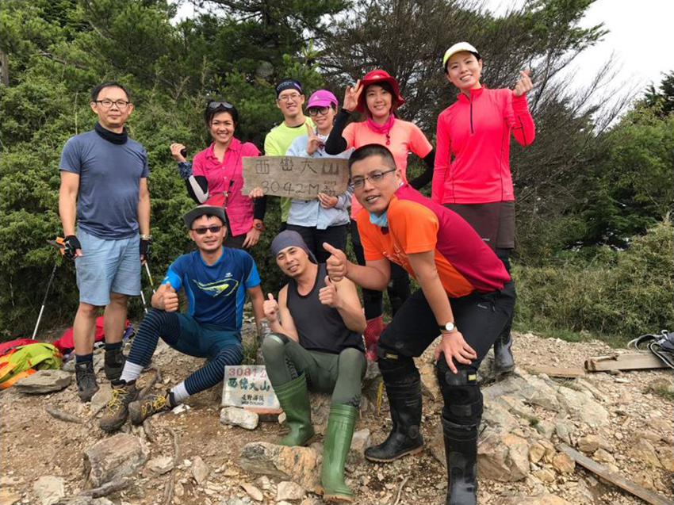 |
第二次2017年10月22號:因為跟越野/跑步隊友,前一天先走郡大所以直接從民宿出發也是凌晨約4點半從登山口出發,但此次就比較快不到11點就下山,當時還是穿著雨鞋跟著他們玩,雖然比較早下山,但因為隊友有狀況,加上起大霧,所以又再上去找人,還好虛驚一場安全回到登山口,而最先一起下來的隊友都已經回到台南了.
| 顏色好繽紛的團照 |
| 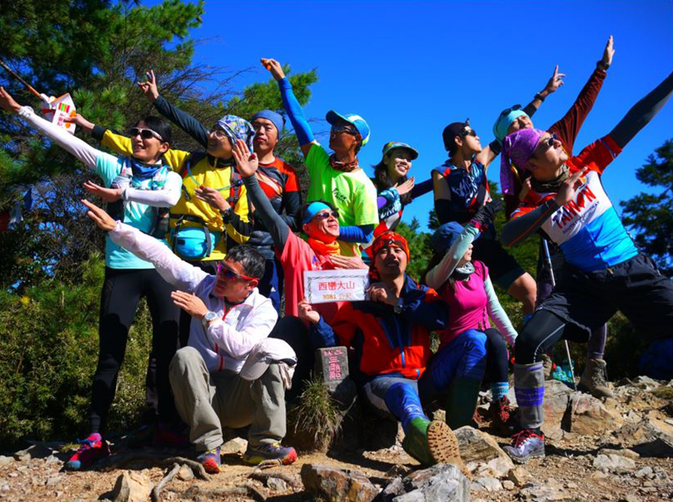 |
第三次2019年10月27號:此次帶公司同事一起上來,模式跟第二次一樣,出發的時間更早,凌晨4點,但此次為領隊,所以慢慢走,策略就是先設定撤退時間中午12點前未走到的隊友必須下山,以及把腳程慢的拉到領隊後面,最終全隊安全完成.
| 登山社 大伙太忙,沒人接社長了 |
| 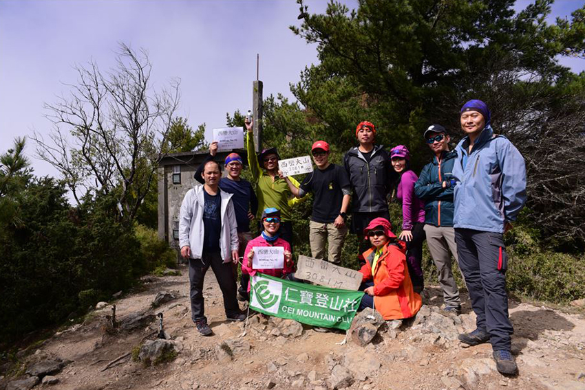 |
郡大山:車輛通行開放時間08:00~12:00/ 13:00~17:00,23K處有林務局的水里工作站望鄉分站和一棵約1200年的紅檜神木,通常座車到此處都會停留稍作休息,而登山口在郡大林道32K處.2017年10月21號 隊友在台21線旁十八重溪橋檢查哨集合,搭接駁進入郡大林道,8點出發大約快10點到登山口,因相對簡單,所以隊友拍照玩很久,下午快2點才下來.
第二次2019年10月26號天氣都大好,所以同事也拍了不少,此次林道開比較快9點就到登山口,但玩更久,到下午3點半才下山.
| 不同群組有不同走法 |
| 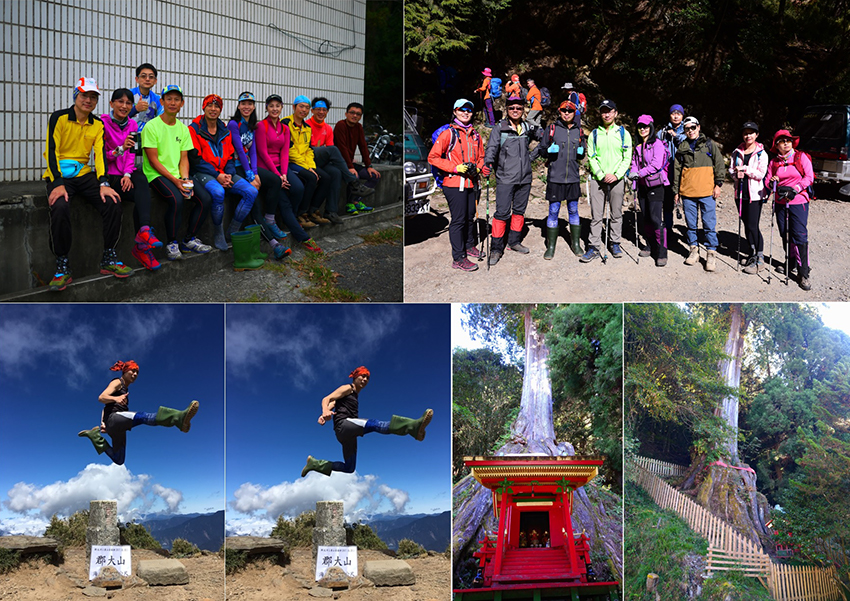 |
西巒大山懷古走法: 黑黑谷上治茆山 下巒安堂 上西巒出人倫林道
2020年12月26日,跟越野咖朋友試走比賽路線及探路,其中有額外切到西巒大山,因此才有此次行程,而此次路程遙遠所以又是半夜不睡覺,在地利國小搭接駁,汽車竟然可以直接通過黑黑谷吊橋,大約半夜3點多到黑黑谷登山口.
此路線顯少登山客走,一開始找不到路,轉了十多分鐘,才看到比賽臨時綁的布條,先來到黑黑谷山北峰1236公尺 >> 黑黑谷山1303公尺 >> 黑黑谷山南峰1290公尺 >> 北治茆山1375公尺又稱 (合流坪山),這段路處於闊葉林下,地上鋪滿滿的落葉,但黑黑谷地名的由來, 起緣於當地有一條河流,過去原住民染瓊麻的處所,據傳說用這裡的水染出來的黑色瓊麻不易褪色,用以染布織衣效果絕佳,故有了黑黑水之名,河谷就稱為黑黑谷, 然而就順勢稱:黑黑谷山.
從北治茆山走到治卯山2909公尺花了快6小時,上升1500公尺這段應該是今天最硬的,然後再前往治茆山南峰2863公尺,大約12點左右來到人倫林道的後端45k治茆山與西巒大山鞍部停機坪,另一個比較輕鬆的走法可從雙龍林道過來但就不會去巒安堂,在停機坪大休至下午1點才出發前往,位於昔日(舊)人倫工作站,位於海拔2600公尺,是由林務局於民國49年所建立,這裡是50年代大規模的伐木產業,整個林道系統約60公里長,而此位於37.6公里處,繁華時期大約有一百多人在這裡工作,所以包含員工宿舍,辦公室,工寮,休閒中心等建物以及人們建立的廟宇祀堂,後期因為經濟產值因素, 直到民國72年正式走入歷史,而巒安祀堂裡的神明也早己被請走,裡頭空空變成山林間的一座廢墟,但牆內外的壁畫依舊可看到當年留下的輝煌.
從巒安堂大約走1小時半後,終於來到西巒大山,而後面就是開放綠燈了,無限速下山,眼看太陽快下山了,因此啟動狂奔模式最後2小時內下到登山口,也就是人倫林道17K柵欄.
| 黑黑谷裡的大樹 |
| 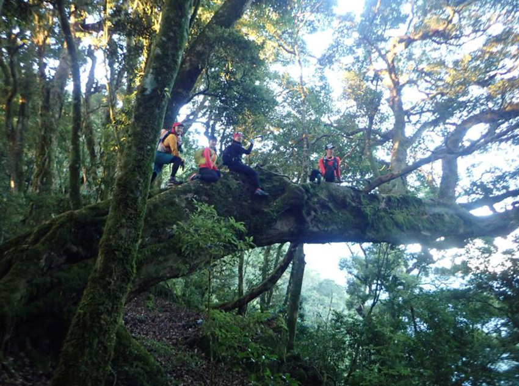 |
| 懷舊古道 |
| 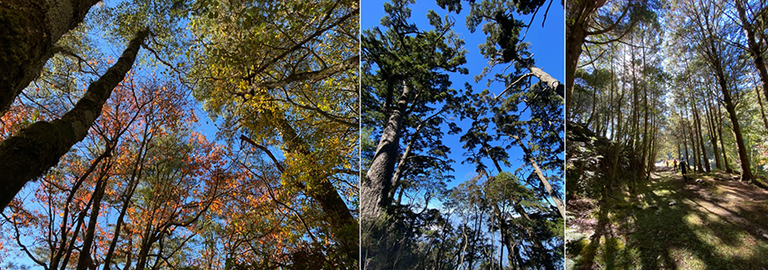 |
| 治茆山大合照 |
| 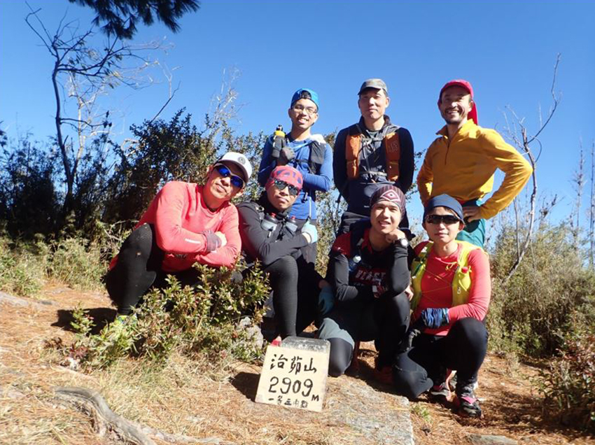 |
| 巒安堂大擺拍 |
| 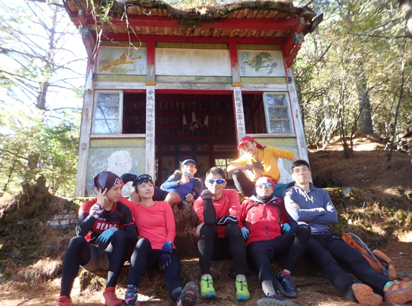 |
縱走連走法:東埔上郡大山 順走清水山 接金子山 再上西巒大山 下人倫林道
2022年3月19號半夜1點出發,當隊友提出來要郡大西巒連著走時,當下第一時間就+1,完全沒想過可以不用搭碰碰車去爬郡大山,另一條路開高山上郡大隊友已走過,但此次要從八通關古道過愛玉亭這裡上去,前一天先到民宿休息,半夜不睡覺行程要提早睡飽,東埔登山口出發,從馬路上切上去時躺著一隻被路殺的紅竹蛇(無毒,台灣四大美蛇之一),領隊一開始就走比較快,過愛玉亭後一下子就到叉路,右邊往八通關古道,但今天要直走經過菜園,當經過時全村的狗都用叫聲歡迎我們的到來.
從菜園右上切開始爬坡,真的是陡上,中途停了好多次,有些坡爬上去會滑下來,要一直使用腳力,大約走3小時20分到一處崩坍處,要腰繞過去,結果衝太快爬了上去就覺得怪怪的,差點下不來,過了危險路段後小休10分鐘,大約5點半時抵達郡大山,終於不用爬山比搭車累了,而是直接爬的很累,山頂的溫度5度,箭竹有水珠,手捉到快凍僵,很快拍一拍合照就往下切,中途經過郡大北峰,望鄉山都是三千公尺以上,清晨天氣冷,需小跑起來熱身,還不到七點就下到郡大林道32k處.
郡大林道往前走剛好有活水源,休息吃點東西,然後接著就是一直走一直走到清水南鞍營地,此時已經九點多了,隊友直接躺平,睡覺回血,接著到清水山南峰,清水山,這時來到10點多17分,再喘口氣休息吃補給準備接下來的金子山,此路線走的人不多,所以大伙很期待撿到鹿角,但鹿大便很多,就是沒看到角,心裡頭想還是保留體力下山不要亂晃找角,下午3點39終於爬上西巒大山,休息補足體力後,開啟越野模式出登山口,天還亮著,直接到柵欄外等,看到接駁車心情就開心,隊友到齊後,接駁從人倫林道狂飆回到東埔也要開快2小時,今天又解鎖一次不錯的行程.
| 民宿(左上) 被路殺紅竹蛇 (右上) 八通關古道入口(左下) 愛玉亭(右下) |
| 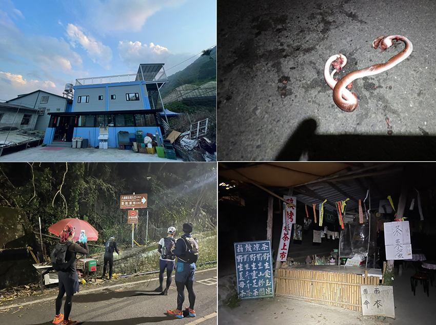 |
| 郡大山 相關山頭合照, 郡大林道32K(左下圖) |
| 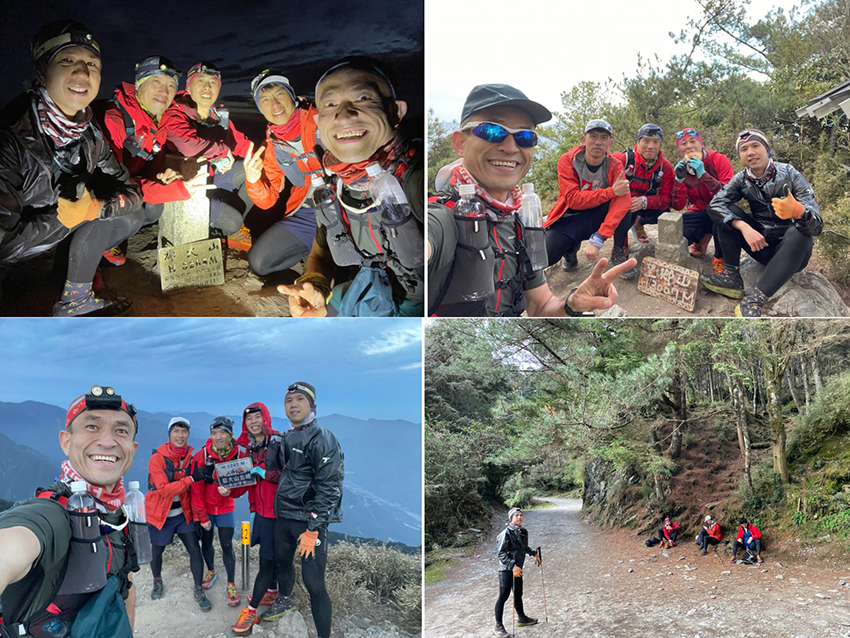 |
| 郡大林道危險崩塌路段 |
| 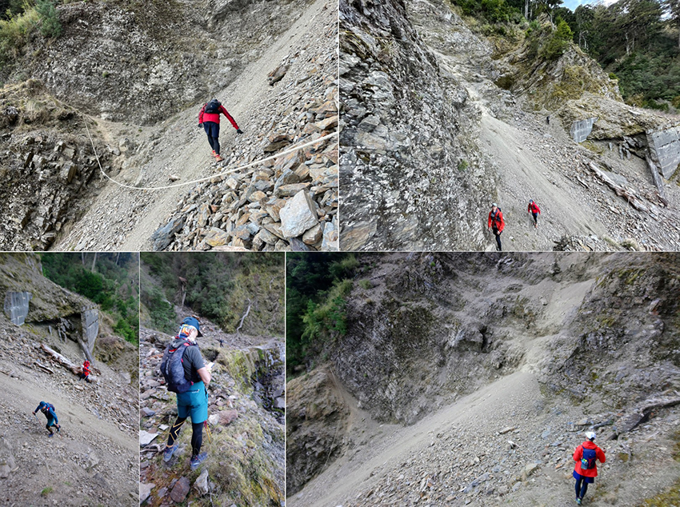 |
| 郡大林道1K水泥大工寮 |
| 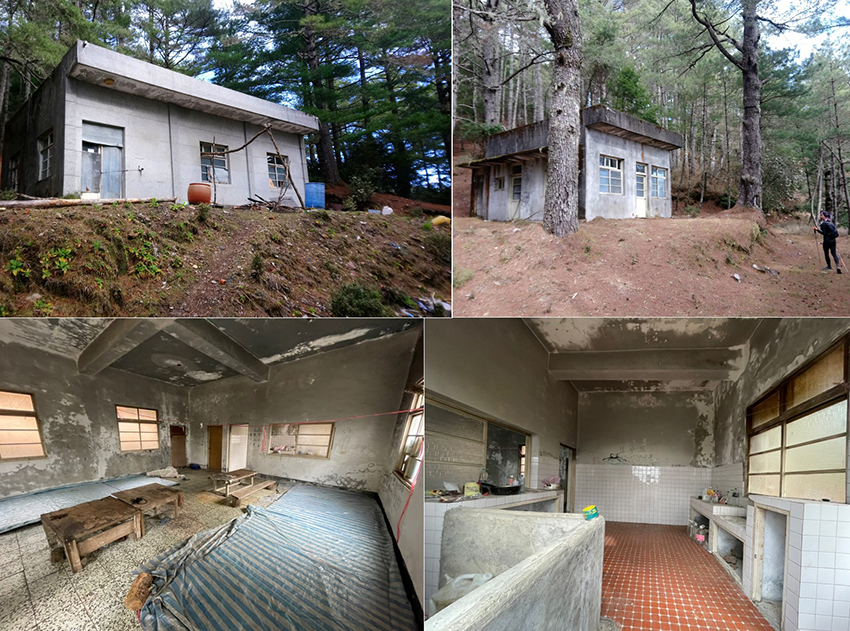 |
| 清水山南峰營地…睡覺 |
| 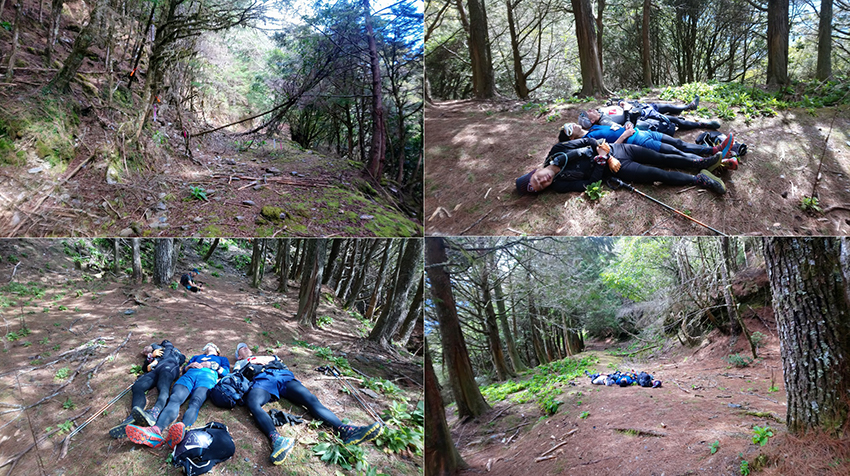 |
| 清水到金子地型落差路段 |
| 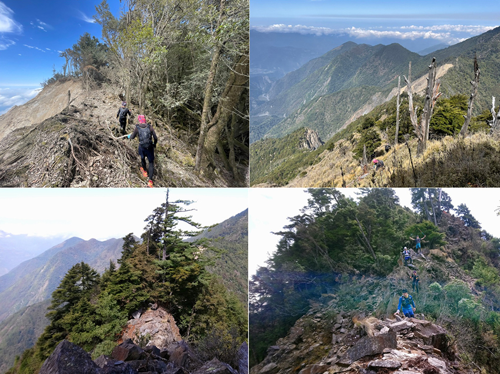 |
| 清水山南峰, 清水山, 金子山, 西巒大山 |
| 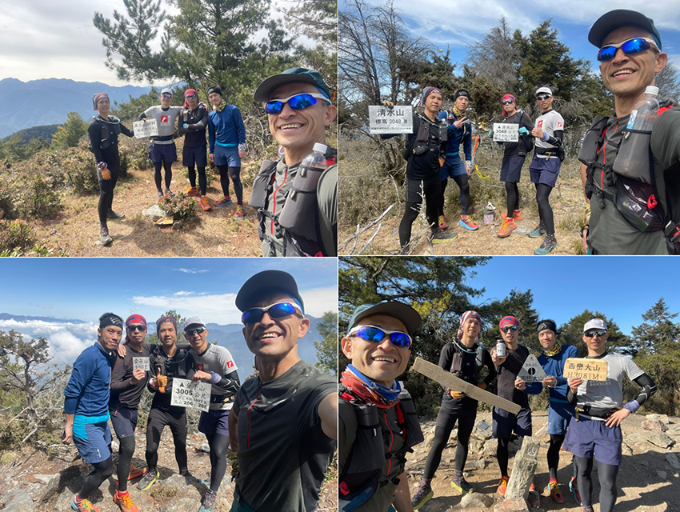 |
行程紀錄
2017年8月6號: 西巒大山3:00起床>> 4:00出發>> 7:25瞭望台>> 10:15西巒大山登頂 (上山6小時15分)
11:10下山>> 11:50追到馬揪(JOY)>> 12:15回到瞭望台>> 13:20回登山口 (下山2小時10分)
2017年10月21號~22號: 郡大山 西巒大山
D1-10/21 郡大山 (總時間:5小時58分, 上山2小時33分, 下山58分)
8:00管制哨開放>> 9:50郡大登山口>> 10:15望鄉山>> 11:40 郡大北峰
>> 12:23 郡大山>> 13:00下山>> 13:20郡大北峰>> 13:58回登山口
D2-10/22 西巒大山 (總時間:6小時9分 ,上山3小時21分, 下山1小時37分)
4:38登山口>> 6:30觀景台>> 休息10分>> 7:59西巒大山
>>9:10下山>> 9:57觀景台>> 10:47回登山口
2017年10月26號~27號: 郡大山 西巒大山
D1- 2019/10/26 （總時間：6小時30分）
9:00 郡大山登山口>>9：45 望鄉山 >>12：33郡大山
13：30返回>> 15：18望鄉山>> 15：30回登山口
D2-2019/10/27 （總時間：11小時19分）
04:02 西巒登山口>> 7:06廢棄瞭望臺>> 10：33西巒大山
11：32返回>> 13：55廢棄瞭望臺>> 15：21西巒登山口
2020年12月26號: 黑黑谷上治茆山 下巒安堂 上西巒出人倫林道
（總時間：15小時13分, 距離:31.02公里, 爬升:3101公尺）by Hubert
03：19 黑黑谷登山口
03：36 黑黑谷山北峰 1236m
03：47 黑黑谷山 1303m
04：02 黑黑谷山南峰1290m
04：21 北治茆山1375m（合流坪山）
10：12 治茆山2909m
11：09 治茆山南峰2863m
12：16 45k治茆山與西巒大山鞍部停機坪
14：27 巒安堂
16：25 西巒大山 (16:39開始下山,實際下山走1小時53分)
17：35 景觀台
18：32 西巒大山登山口 (人倫林道17K柵欄)
2022年3月19號: 東埔上郡大山 順走清水山 接金子山 再上西巒大山 下人倫林道
（總時間：16小時21分 距離：36.27公里 爬升3852公尺，休息時間：96分）
00：57 東埔登山口
04：20 崩塌前休10分
04：34 峭壁上
05：25 郡大山3265公尺
05：59 郡大北峰3241公尺
06：39 望鄉山H3009公尺
06：53 郡大林道
07：21 補水用餐休20分
09：13 清水山南鞍營地休22分（隊友睡覺）
09：55 清水山南峰3018公尺
10：17 清水山3048公尺，休15分
13：02 金子山3005公尺，休18分
15：39 西巒大山3081公尺，休11分
17：18 人倫林道登山口